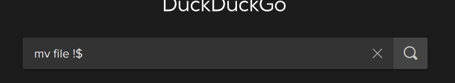
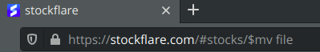
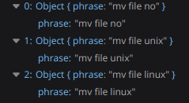
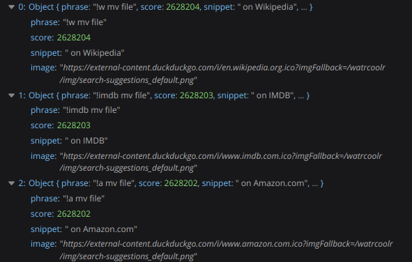

Bangs of the Duck
DuckDuckGo Bangs - A quick search hack, that I stumbled upon!
DuckDuckGo 🔥, is my personal favorite search engine which I have been using since my bachelor years. The primary reason is what I search for stops at the results page and has never followed me to the other webpages I visit. Read this post as I backtrack the response from DuckDuckGo when I searched mv file !$ and ended up with odd results.
- What is the Query?
- What DDG did on hitting Search?
- Re-visiting the DDG search!
- Wow, Bangs 😎!
What is the Query?
My instructor posted a step in a tutorial for setting up project base repository, I had found this weird command mv file !$ looks like a bang, but what was it?.
I checked the man page for mv but I couldn’t find these characters at all, ok these bangs are not options might be a particular argument in Linux, what does it do?
touch micro
mkdir -p a/b
mv macro !$
References - for more Special signs in UNIX
So this cool command takes the previous commands arguments and passed here, so cool!!
But how did I very demystify this?, well I entered a rabbit hole when I searched mv file !$.
What DDG did on hitting search?
So let’s quack the duck now. I hit the Search and guess what I found instead of results page!
Searching on DDG
Am I feeling lucky, with a quick result? - How the hell did my search navigate to a different site and have my search passed as parameters? Is it a something to do with the characters? I never ran into an issue similar to this before.
Am I feeling lucky?
So let’s unwrap our toolKit the Developer Tools from fireFox to dig into how the request/response cycle has happened for this result!
Re-visiting DDG Search!
It’s a neat analysis always to look at how web-services ingest data with their backend services. But as we all know auto-complete searches are communicated with the server for every character and suggestions are brought to you. I’m still at mv file. So far so good casual results the mv brings excellent suggestions.
DDG Suggestions
Now let’s type the next 2 characters !$ ~ This is where things get interesting after typing the ! exclamatory mark …
! Suggestions?
!a - amazon, !w - wiki these are the bangs of the duck, a quick trick for you to speed your search.
Wow, Bangs 😎!
So how did i end up finally searching for the query? linux man exclamanation dollar
… The !! command reexecutes the previous event, and the shell replaces the !$ token with the last word from the previous command line.
Refer CW Article
I wrap the blanket on this one, just a weird stupid post but hey, learnt regarding !! command and !$, !a Ducks Bangs, plus the way the search events triggered from the box.
...
categories: [ random , interesting-but-stupid , search ]